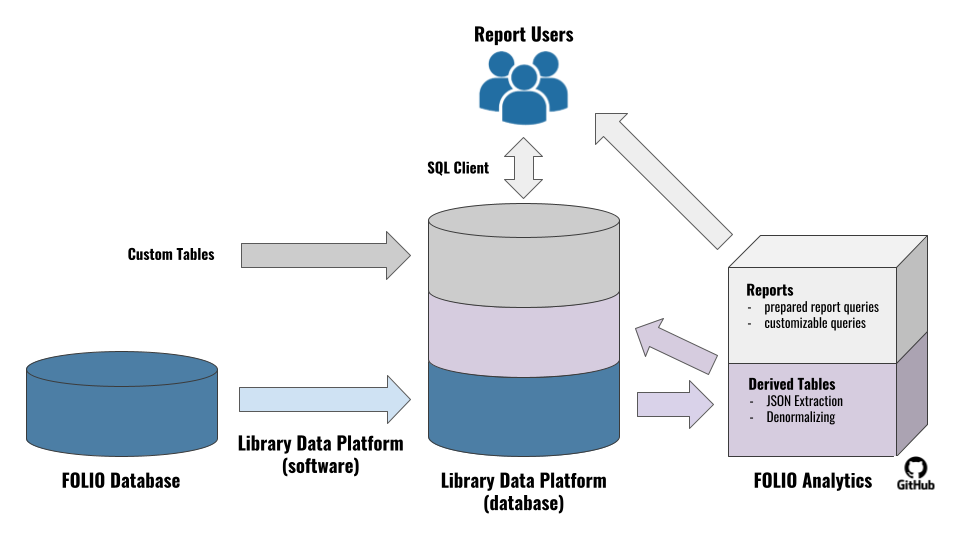

Note: This documentation covers LDP v1.1.11 and FOLIO Analytics v1.0, which were released at approximately the same time as the FOLIO Honeysuckle release.
Library Data Platform (LDP) は、FOLIO と ReShare の両プロジェクトで利用されている、統計・業務分析を行うためのオープンソースプラットフォームを開発するプロジェクトです。 LDPは、FOLIOのモジュールからデータを抽出してリレーショナル・データベース（FOLIOコミュニティでは非公式に「LDP」と呼ばれています）に格納し、FOLIOのデータを使って複雑なレポートや分析を行うことを可能にしています。FOLIOアプリの中には、ビルトインのレポートや、検索・フィルタリングのワークフローから結果をダウンロードする機能を持つものもありますが、LDPはFOLIOアプリ全体のデータを組み合わせたより大規模で複雑なクエリに対応しています。
FOLIOからLDPへのデータの流れ
FOLIOからLDPへの基本的なデータの流れは、下図のようになります。LDPは、FOLIOアプリが使用するデータベースからデータを抽出します。LDPからは、導出テーブル（FOLIOのデータを単純化し、その結果をLDPに保存する）とレポートクエリ（レポート利用者の特定のニーズに対応する）の2種類のクエリにデータが流れ込みます。これらのクエリは、FOLIO Analyticsのクエリリポジトリで共有され、アドホッククエリのバックボーンとなるものでもあります。

LDPの特徴
- オープンソースのソフトウェアとクエリ開発
- 信頼できるデータベース・プラットフォーム上に構築
- FOLIO以外のデータを取り込むためのカスタムテーブルを作成することが可能
- FOLIOレコードの履歴追跡
- 多様なレポーティングアプリケーションからの接続が可能
- Appを横断したFOLIOクエリの実行が可能
- 本番アプリケーションのパフォーマンスに影響を与えることなく FOLIO データを照会する機能
- 派生テーブルを使用した簡素化されたFOLIOデータモデルへのクエリ機能